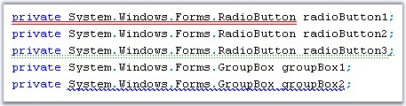
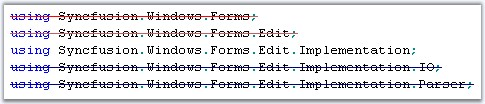

Underlines and Wavelines are mainly used to highlight certain sections of text, possibly to notify the user about errors or important sections of the document. Edit Control allows you to underline any desired text in its contents. The underlines can be of different styles, colors and weights, with each of them being used to convey a different meaning. Edit Control supports underlines of the following styles: Solid, Dot, Dash, Wave and DashDot styles. You can also specify the weight of the underlines to be Single or Double.
Before the underlining can be applied to the selected text, a custom underlining format has to be defined. The RegisterUnderlineFormat method of ISnippetFormat, registers the custom underline format to be used while underlining a region. You can create a custom underlining format, as shown in the code below.
|
[C#]
// Registers the custom underline format. ISnippetFormat format = editControl1.RegisterUnderlineFormat (SelectedColor, SelectedStyle, SelectedWeight); |
|
[VB.NET]
' Registers the custom underline format. Dim format As ISnippetFormat = editControl1.RegisterUnderlineFormat(SelectedColor, SelectedStyle, SelectedWeight) |
The SelectedColor value can be set to any desired color. The SelectedStyle value is specified by using the UnderlineStyle enumerator. The SelectedWeight value is specified by using the UnderlineWeight enumerator.
|
Edit Control Underline Enumerator |
Description |
|
UnderlineStyle |
UnderlineStyle.Solid(default), UnderlineStyle.Dot, UnderlineStyle.Dash, UnderlineStyle.Wave, and UnderlineStyle.DashDot. |
|
UnderlineWeight |
UnderlineWeight.Thick(default) and UnderlineWeight.Double. |
Underlining Selected Text
Underlining can be set and removed for selected text by using the below given methods.
|
Edit Control Method |
Description |
|
SetUnderline |
Sets underlining of the specified text region. |
|
RemoveUnderLine |
Removes underlining in the specified region. |
|
[C#]
this.editControl1.SetUnderline(this.editControl1.Selection.Top, this.editControl1.Selection.Bottom, format); this.editControl1.RemoveUnderline(this.editControl1.Selection.Top, this.editControl1.Selection.Bottom); |
|
[VB.NET]
Me.editControl1.SetUnderline(Me.editControl1.Selection.Top, Me.editControl1.Selection.Bottom, format) Me.editControl1.RemoveUnderline(Me.editControl1.Selection.Top, Me.editControl1.Selection.Bottom) |
Underlining using Configuration File
You can also set the underlining from the configuration file, as shown in the below example.
|
[XML]
<format name="Comment" Font="Courier New, 10pt, style=Bold" FontColor="Green" LineColor="Red" Weight="Thick" Underline="DashDot" /> |
LineColor, Weight and Underline parameters are used to specify the type of underlining to be used.

Figure 18: Text with Double Solid Style, Double Dot Style, Wave Style Underlines
A sample which demonstrates this feature is available in the below location.
..\My Documents\Syncfusion\EssentialStudio\Version Number\Windows\Edit.Windows\Samples\2.0\Advanced Editor Functions\UnderlinesDemo
Striking Through Text
The StrikeThrough method allows you to perform strikethrough operation on the text contained in the Edit Control. This is a very useful feature in denoting text that was deleted from the original document or highlighting offending code. You can also specify any custom color for the strikethrough line.
|
[C#]
// Strikeout the current line. this.editControl1.StrikeThrough(this.editControl1.CurrentLine, Color.IndianRed);
// Strikeout the selected text. this.editControl1.StrikeThrough(this.editControl1.Selection.Top, this.editControl1.Selection.Bottom, Color.Navy);
// Strikeout the text in the specified text range. this.editControl1.StrikeThrough(startCoordinatePoint, endCoordinatePoint, Color.Aqua); |
|
[VB.NET]
' Strikeout the current line. Me.editControl1.StrikeThrough(Me.editControl1.CurrentLine, Color.IndianRed)
' Strikeout the selected text. Me.editControl1.StrikeThrough(Me.editControl1.Selection.Top, Me.editControl1.Selection.Bottom, Color.Navy)
' Strikeout the text in the specified text range. Me.editControl1.StrikeThrough(startCoordinatePoint, endCoordinatePoint, Color.Aqua) |
To remove the strikethrough line, just call one of the above mentioned methods and specify the Color parameter as Color.Empty.

Figure 19: Striking Through Range of Text
A sample which demonstrates the StrikeThrough feature is available in the following sample installation path.
..\My Documents\Syncfusion\EssentialStudio\Version Number\Windows\Edit.Windows\Samples\2.0\Advanced Editor Functions\StrikeThroughDemo
See Also